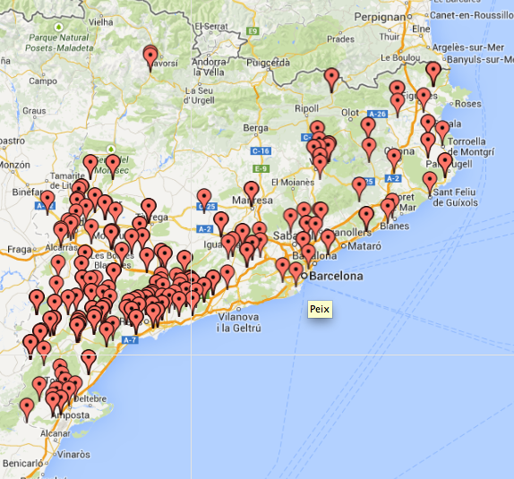

Introducció a mapes amb R
Lluís Ramon
22 de abril de 2014
Objectius
- Entendre estructura dades espacials
- Tractar dades espacials amb R
- Conèixer packages per representar mapes
- Crear mapes temàtics
- Crear mapes sobre Google Maps
- Crear mapes dinàmics
Tipus objectes espacials
- Points (escoles, empreses alimentaries, …)
- Lines (carreteres, rius, …)
- Polygons (paisos, comarques, …)
- Grid/Raster (informació per cada cel·les)
Només tractarem Points i Polygons
- Polygons: Mapes temàtics
- Points: Mapes sobre Google Maps
Importarem informació Polygons d’un shapefile.
Es podria crear amb R però complicat Spatial Cheatsheet.
Què és un Shapefile?
Format intercanvi informació geogràfica.
- shp: emmagatzema entitats geomètriques dels objectes
- dbf: emmagatzema informació dels atributs dels objectes
- shx: emmagatzema l’índex de les entitats geomètriques
Molts organismes oficials ofereixen les dades geogràfiques en aquest format.
Importar mapa d’europa
Llibreria maptools
- getinfo.shape
- readShapeXXX
(XXX: Spatial, Points, Lines, Poly)
library(maptools)
getinfo.shape("data/europa.shp")## Shapefile type: Polygon, (5), # of Shapes: 32europa <- readShapePoly("data/europa.shp")Què és europa? Un list? Un data.frame?
Estructura dades espacials
Llibreria sp
Orientat a objectes (S4 Classes)
- Objectes: Conté atributs que descriuen l’objecte
- Mètodes: Funcions sobre els objectes
- Benficis com: Inheritance, Polymorphism, Encapsulation, etc.
Estructura sp
is(europa)## [1] "SpatialPolygonsDataFrame" "SpatialPolygons"
## [3] "Spatial"isS4(europa)## [1] TRUEgetClass("SpatialPolygonsDataFrame")## Class "SpatialPolygonsDataFrame" [package "sp"]
##
## Slots:
##
## Name: data polygons plotOrder bbox proj4string
## Class: data.frame list integer matrix CRS
##
## Extends:
## Class "SpatialPolygons", directly
## Class "Spatial", by class "SpatialPolygons", distance 2slotNames(europa)## [1] "data" "polygons" "plotOrder" "bbox" "proj4string"str(europa, max.level = 2)## Formal class 'SpatialPolygonsDataFrame' [package "sp"] with 5 slots
## ..@ data :'data.frame': 32 obs. of 5 variables:
## .. ..- attr(*, "data_types")= chr [1:5] "C" "N" "C" "N" ...
## ..@ polygons :List of 32
## ..@ plotOrder : int [1:32] 31 28 13 12 24 11 7 25 32 17 ...
## ..@ bbox : num [1:2, 1:2] -10.5 34.6 44.8 71.2
## .. ..- attr(*, "dimnames")=List of 2
## ..@ proj4string:Formal class 'CRS' [package "sp"] with 1 slotsbbox(europa)## min max
## x -10.48 44.82
## y 34.57 71.17names(europa)## [1] "SP_ID" "STAT_LEVL_" "NUTS_ID" "SHAPE_Leng" "SHAPE_Area"summary(europa)## Object of class SpatialPolygonsDataFrame
## Coordinates:
## min max
## x -10.48 44.82
## y 34.57 71.17
## Is projected: NA
## proj4string : [NA]
## Data attributes:
## SP_ID STAT_LEVL_ NUTS_ID SHAPE_Leng SHAPE_Area
## AT : 1 Min. :0 AT : 1 Min. : 2.9 Min. : 0.33
## BE : 1 1st Qu.:0 BE : 1 1st Qu.: 18.5 1st Qu.: 5.73
## BG : 1 Median :0 BG : 1 Median : 29.5 Median : 9.75
## CH : 1 Mean :0 CH : 1 Mean : 59.1 Mean :22.89
## CY : 1 3rd Qu.:0 CY : 1 3rd Qu.: 70.9 3rd Qu.:35.53
## CZ : 1 Max. :0 CZ : 1 Max. :451.6 Max. :81.24
## (Other):26 (Other):26Gràfic base
plot(europa)plot(europa, bg = "black", col = "white")plot(europa, bg = "steelblue1", col = "wheat", border = "sienna4", lwd = 1.6)Preus europeus de l’electricitat
Continuació entrada Evolució del preu de l’electricitat
load("data/preu_elec.RData")
head(preu_elec)## geo a2004 a2007 a2010 a2013 col2013
## 3 AT 0.0981 0.1050 0.1427 0.1413 #FFFF00
## 5 BE 0.1145 0.1229 0.1449 0.1583 #990033
## 6 BG 0.0486 0.0547 0.0675 0.0771 #669966
## 7 CY 0.0928 0.1177 0.1597 0.2277 #990033
## 8 CZ 0.0660 0.0898 0.1108 0.1249 #FFFF00
## 9 DE 0.1259 0.1433 0.1381 0.1493 #990033- col2013 ja té el color segons intervals
- Com crear color explicat a Mapes amb R
- Llibreries classInt, RColorBrewer, funció palette, findColours
Creuar dades europa
merge accepta un Spatial i un data.frame.
europa_elec <- merge(europa, preu_elec, by.x = "SP_ID", by.y = "geo")
is(europa_elec)## [1] "SpatialPolygonsDataFrame" "SpatialPolygons"
## [3] "Spatial"head(europa_elec@data)## SP_ID STAT_LEVL_ NUTS_ID SHAPE_Leng SHAPE_Area a2004 a2007 a2010
## 0 AT 0 AT 24.860 10.0283 0.0981 0.1050 0.1427
## 1 BE 0 BE 14.006 3.8969 0.1145 0.1229 0.1449
## 2 BG 0 BG 21.372 12.2090 0.0486 0.0547 0.0675
## 3 CH 0 CH 17.455 4.8663 NA NA NA
## 4 CY 0 CY 6.326 0.9189 0.0928 0.1177 0.1597
## 5 CZ 0 CZ 20.822 9.8424 0.0660 0.0898 0.1108
## a2013 col2013
## 0 0.1413 #FFFF00
## 1 0.1583 #990033
## 2 0.0771 #669966
## 3 NA <NA>
## 4 0.2277 #990033
## 5 0.1249 #FFFF00col a vector of colour values
plot(europa_elec, col = europa_elec$col2013)spplot
colors <- colorRampPalette(c("#669966", "#336699", "#FFFF00", "#990033"))(32)
spplot(europa_elec, zcol = c("a2010", "a2013", "a2004", "a2007"), col.regions = colors)- Paleta de colors sobre tots els anys
- Utilitza package lattice. Funcionament semblant.
Mapa de industries agraries i alimentaries de Catalunya
Dades del Registre d’indústries agràries i alimentàries de Catalunya (RIAAC).
load("data/ind_ali.RData")
head(ind_ali)## establiment sector x y
## 1 A. I J. GARGANTA SL Alimentació animal 510067 4654945
## 2 ABONOS ORGANICOS BOIX, SL Altres agràries 445675 4645225
## 3 ABSOLUTUS OLEUM, SL Olis i greixos 302692 4546957
## 4 ACABADOS DOUBLE FACE DEL VALLES SA Altres agràries 440397 4609387
## 5 ACABADOS ESPECIALES VIC SA (AESVICSA) Altres agràries 440348 4644908
## 6 ACCES FILTERS, SL Forestals 462962 4623129- He simplificat i reduït els camps.
- Coordenades en UTM.
- Farem un mapa amb fons de Google Maps. Requereix coordenades LonLat.
Canviar sistema de coordenades
Llibreria rgdal
Funció spTransform, CRS
library(rgdal)
coord_utm <- CRS("+proj=utm +zone=31")
coord_LonLat <- CRS("+proj=longlat")
ind_sp_utm <- SpatialPoints(ind_ali[, c("x", "y")], proj4string = coord_utm)
ind_sp_LonLat <- spTransform(ind_sp_utm, coord_LonLat)
lon <- coordinates(ind_sp_LonLat)[, 1]
lat <- coordinates(ind_sp_LonLat)[, 2]
ind_ali_LonLat <- cbind(ind_ali[, c("establiment", "sector")], lon, lat)
head(ind_ali_LonLat)## establiment sector lon lat
## 1 A. I J. GARGANTA SL Alimentació animal 3.1216 42.05
## 2 ABONOS ORGANICOS BOIX, SL Altres agràries 2.3445 41.96
## 3 ABSOLUTUS OLEUM, SL Olis i greixos 0.6522 41.05
## 4 ACABADOS DOUBLE FACE DEL VALLES SA Altres agràries 2.2844 41.63
## 5 ACABADOS ESPECIALES VIC SA (AESVICSA) Altres agràries 2.2802 41.95
## 6 ACCES FILTERS, SL Forestals 2.5545 41.76RGoogleMaps
library(RgoogleMaps)
mapa_fons <- GetMap.bbox(ind_ali_LonLat$lon, ind_ali_LonLat$lat)
PlotOnStaticMap(mapa_fons)
PlotOnStaticMap(mapa_fons, ind_ali_LonLat$lat, ind_ali_LonLat$lon, pch = 19, cex = 0.7)cond <- ind_ali_LonLat$sector == "Lactis"
ind_lac <- ind_ali_LonLat[cond, ]
cond <- ind_ali_LonLat$sector == "Peix"
ind_peix <- ind_ali_LonLat[cond, ]
PlotOnStaticMap(mapa_fons, ind_lac$lat, ind_lac$lon, pch = 19, cex = 0.7, col = "steelblue1")
PlotOnStaticMap(mapa_fons, ind_peix$lat, ind_peix$lon, pch = 19, cex = 0.7, col = "blue", add = TRUE)
ggplot2 + ggmap
- Utilitza ggplot2 de base
- ggplot2 permet fer mapes temàtics (funció fortify i geom_map)
- ggmap té funcions interessants (geocode, mapdist, route)
- Explicat a Introducción práctica a la librería ggplot2 y su integración con ggmap
library(ggmap)
center = c(mean(ind_ali_LonLat$lon), mean(ind_ali_LonLat$lat))
zoom <- min(MaxZoom(range(ind_ali_LonLat$lat), range(ind_ali_LonLat$lon))) # MaxZoom es de RgoogleMaps
mapa <- get_map(location = center, zoom = zoom, maptype = "roadmap")
ggmap(mapa, extent = "device")ggmap(mapa, extent = "device") + geom_point(data = ind_ali_LonLat, aes(lon, lat))
ggmap(mapa, extent = "device") +
geom_point(data = ind_ali_LonLat, aes(lon, lat, colour = sector))
ggmap(mapa, extent = "device") +
geom_point(data = ind_ali_LonLat, aes(lon, lat, colour = sector), size = 0.8) +
facet_wrap(~sector) + guides(colour = FALSE)
plotGoogleMaps
library("plotGoogleMaps")
ind_sp <- SpatialPointsDataFrame(ind_sp_LonLat, ind_ali[, c("establiment", "sector")])
plotGoogleMaps(ind_sp[1:99, ], filename = "plotGoogleMaps/ind_.html", mapTypeId = "ROADMAP")LeafletR
Leaflet Llibreria javascript amb base a difrents servies.
library("leafletR")
industries <- toGeoJSON(data = ind_ali_LonLat[1:99, c("lat", "lon", "sector")], dest = "leaflet", name = "industries")
ind_html <- leaflet(data = industries, dest = "leaflet", popup ="sector", base.map="mqsat", incl.data = TRUE)
browseURL(ind_html)googleVis
library(plotGoogleMaps)
ind_ali_LonLat$LatLong <- paste(ind_ali_LonLat$lat, ind_ali_LonLat$lon, sep = ":")
indGoogleVis <- gvisMap(ind_ali_LonLat, "LatLong", options = list(useMapTypeControl=TRUE))
# plot(indGoogleVis)
print(indGoogleVis, file = "googleVis/industria.html")
Quins packages hem usat?
- sp (informació espacial, mapes temàtics)
- maptools (input/output)
- rgdal (projeccions, input/output)
- RgoogleMaps i ggmap (Afegir fons de Google Maps)
- plotGoogleMaps, leafletR, googleVis (mapes dinàmics)
Quins packages NO hem usat?
Referències
- Llibre Applied Spatial Data Analysis with R
- CRAN Task View: Analysis of Spatial Data
- R-News: Classes and methods for spatial data in R
- Spatial cheat Sheet
- Mapes amb R
- Introducción práctica a la librería ggplot2 y su integración con ggmap
- S4 Classes in 15 pages, more or less